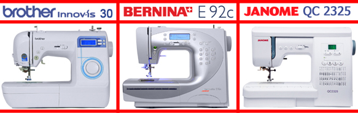
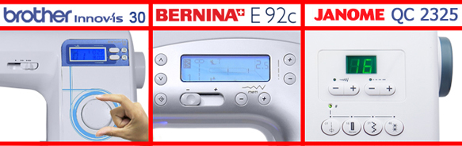
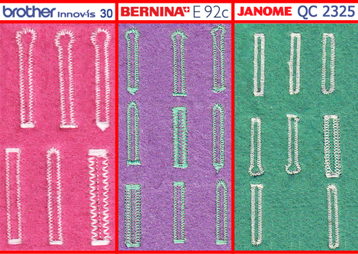

|  |
|
В этот раз мы с вами коснемся трех компьютеризированных машин, ведущих брендов азиатского и мирового рынка. Аппараты фирмы Janome и Brother, QC 2325 (6260) и Innovis 30 (JS 70), а также мы познакомимся сегодня с «европейцем» из Швейцарии - Bernina Bernette 2092 (92E). Вся испытуемая техника с первого взгляда похожа друг на друга, но одновременно совершенно разная, и имеет отличные друг от друга характеристики. При всех своих плюсах по сравнению с электромеханическими машинами, большая длина стежка, легкие настройки, большая функциональность имеют и слабые стороны. Уязвимые места у всех испытуемых разные, впрочем, начнем по порядку. |
|  |
|
Начнем, пожалуй, с «европейца». Машина Bernina Bernette 2092 (92E) приятна для восприятия глаз, радует великолепной светодиодной подсветкой, имеющей дополнительную лампочку “по всему полю шитья”, все это о Bernette. Действительно, если приглядеться, в машине есть все. Тут и система drop-in (облегченная заправка нижней нити), и возможность шитья без педали, не малое количество операций, включает латинский алфавит, весьма информативный дисплей. Эргономика не плохо продумана, хотя можно и запутаться в таком функционале, разделенном на подгруппы. Все основные швейные операции вынесены на переднюю панель, для более быстрого и удобного выбора нужной строчки. Далее рассмотрим Brother Innov'is 30, который выглядит также привлекательно и предельно прост и понятен. Техника управления логична и не перегружена лишними деталями, данная модель оборудована колесом управления и четырьмя кнопками, вот и все, что вынесено на переднюю панель. Светодиод, drop-in, информативный экран, шитье без педали, все это и дополняет стильного «трудягу» NV 30. Стоит отметить умение этой машинки делать полноценную закрепку в конце и начале строчки, она делается не «в точку», а путем усиления последних стежков. Минус, который бросается в глаза – отсутствие возможности отображения на экране вида стежка, все операции находятся на отдельной пластине, которую можно закрепить на ручку машинки, что не очень удобно, так как все имеет свойство теряться. Janome Quilting Complit 2325 – машинка, немного выбивающаяся из этого обзора, вот поэтому она завершает его. Первым делом стоит отметить, что 2325 предназначена для квилтинга, и из всех своих 60 операций, швейных имеет минимальное количество. Эргономика машины подкачала... Тут, честно говоря, QS отделяет «пропасть» от двух других участников. Подсветка в виде лампы накаливания, отсутствие возможности шить без педали, отсутствие облегченной заправки нижней нити, слабо информативный дисплей, похожий на древний кассовый аппарат – это, безусловно, явные минусы данного аппарата. Выбор операции происходит вообще странно, путем нажатия кнопки, например, 15 раз, если нужна 15 строчка. Отметить необходимо и то, что весь функционал разделен на 4 группы и соответственно на 4 кнопки, что не существенно облегчает выбор операции. Справедливости ради, необходимо обратить внимание, что аппарат обладает хорошим швейным советником и автоматическим натяжением нити, что на первый взгляд выглядит удобно. Также в комплект входит верхний транспортер, для лучшей подачи “проблемных материалов”. |
|
Условия: прямая строчка на одинаковых натяжениях нити, материалах и длине стежка. Ставим натяжение на «4», длину стежка на «2,5» и берем трикотажный материал. Итоги: Бернина справилась, но заметна не большая "елочка". Переплетение верхней и нижний нити - там где надо. Четверочка «с натягом». Бразер сделал хорошую строчку, с хорошим переплетением внутри материала. Тут сказать нечего. Это пять! Джаноме дала еле заметную "елочку", но случилась беда с натяжением. Попробуем автоматическое натяжение, коль оно у нас есть. Итог: не лучший вариант, честно говоря, вещь не очень полезная. Это «троечка», следует поработать с натяжением. |
|
Условия: выметывание одинаковых петель. Итоги: Бернина сделала не плохую по геометрии, но слабую петлю, она начала просто обметывать «зигзагом». Ну, так сказать - крепкий «середнячок». Бразер сделал красивую и крепкую петлю, за счет того, что вначале машина проложила прямые строчки, а потом их обметала. Явный «конек» NV. Джаноме. Честно говоря, геометрия не очень, глазок не самый лучший, да и по прочности она такая же, как у Бернетты. Результат не впечатлил. |
|  |
В данной статье мы провели сравнение швейных машинок , и . Получить информацию о сравнении других швейных машин вы можете на странице «обзоры». Сайт регулярно обновляется и дополняется новыми обзорами, не пропустите! В данной статье мы провели сравнение швейных машинок Bernina Bernette 2092 (92E), Brother Innov'is 30 и Janome Quilting Complit 2325. Получить информацию о сравнении других швейных машин вы можете на странице «обзоры»